As cinco maiores cidades do estado de Rio de Janeiro
1. Rio de Janeiro
Rio de Janeiro é a segunda maior cidade do Brasil, famosa por seu turismo e importância no setor de petróleo e gás.
População: ~6,7 milhões
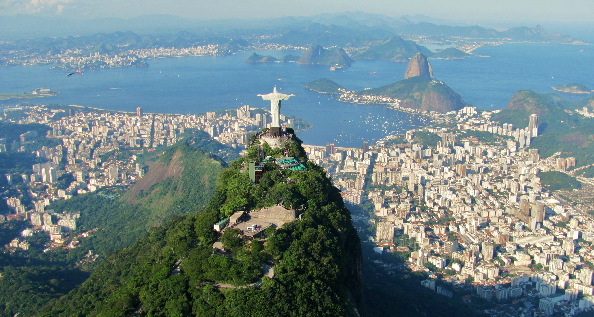
 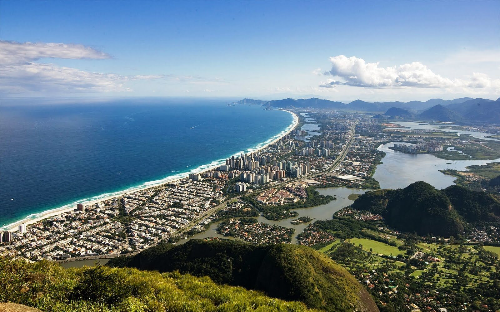
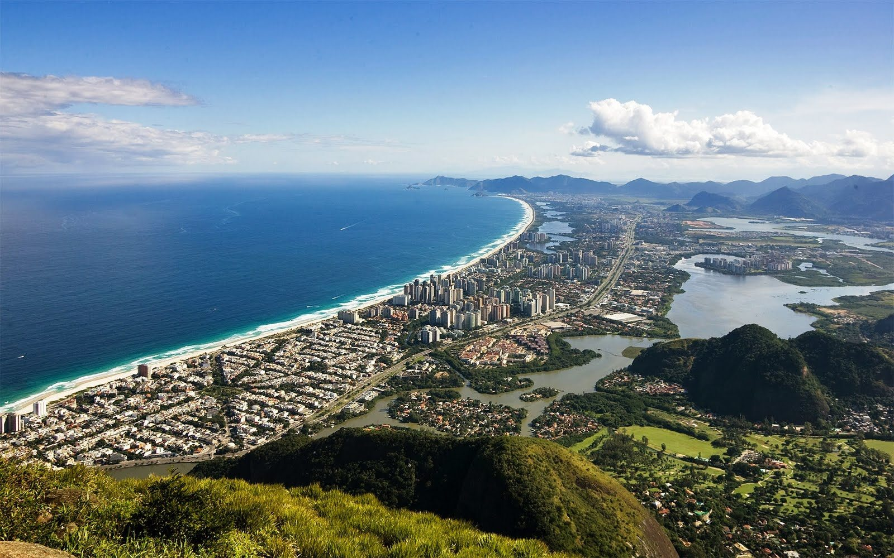
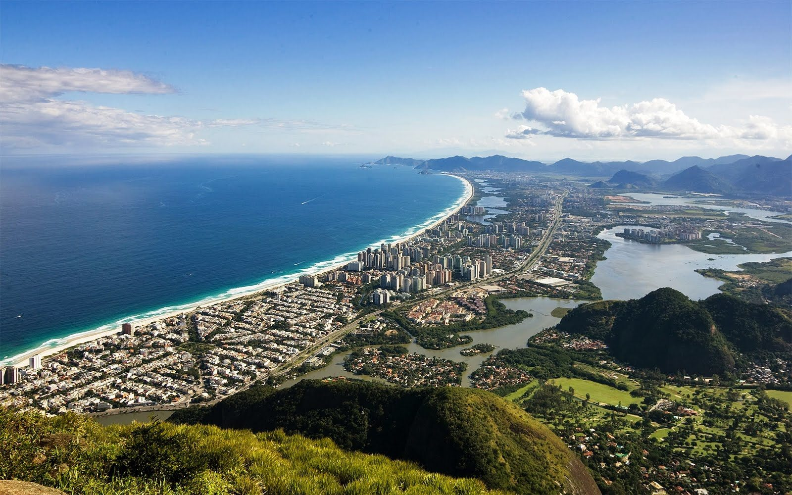
Voltar ao topo
Página principal
2. São Gonçalo
São Gonçalo é uma cidade com grande crescimento populacional, próxima à capital.
População: ~1,1 milhão
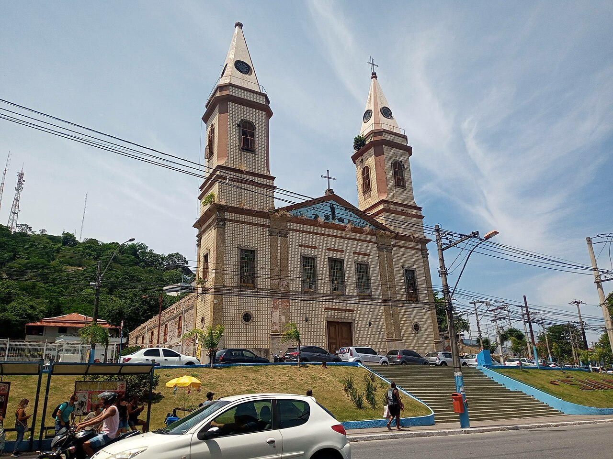
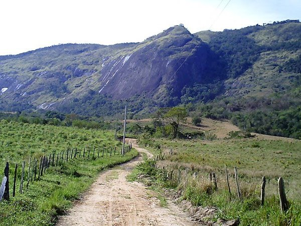

Voltar ao topo
Página principal
3. Duque de Caxias
Duque de Caxias é um importante polo industrial e logístico, com presença forte no setor de petróleo.
População: ~930 mil
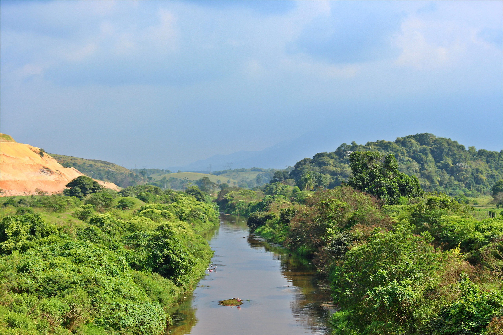
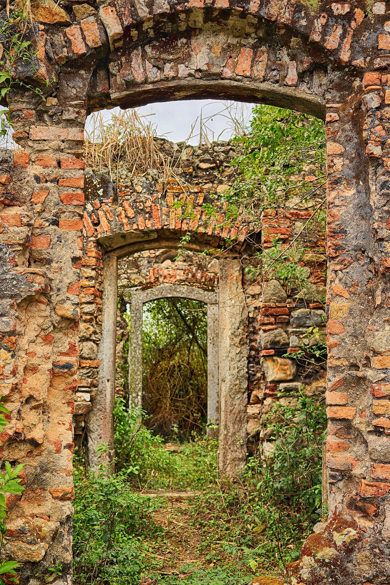
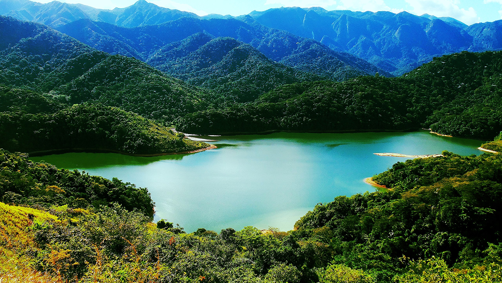
Voltar ao topo
Página principal
4. Nova Iguaçu
Nova Iguaçu é uma grande cidade da Baixada Fluminense, com comércio e serviços expressivos.
População: ~830 mil
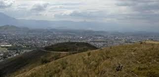
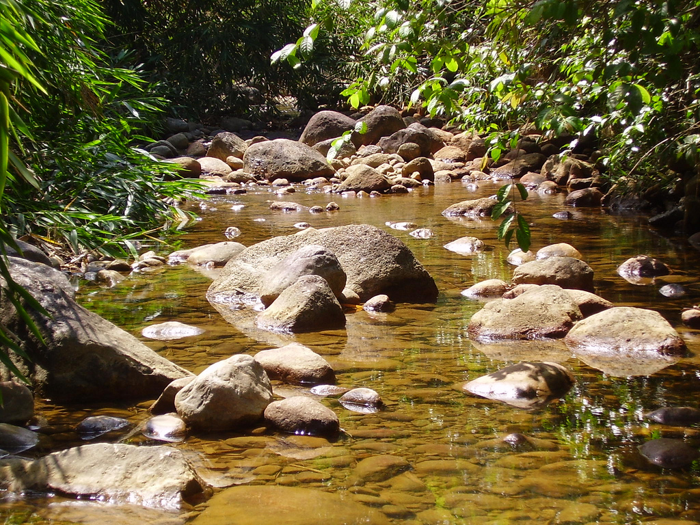
Voltar ao topo
Página principal
5. Niterói
Niterói é conhecida por seu alto IDH, sendo um importante centro de serviços e educação.
População: ~520 mil
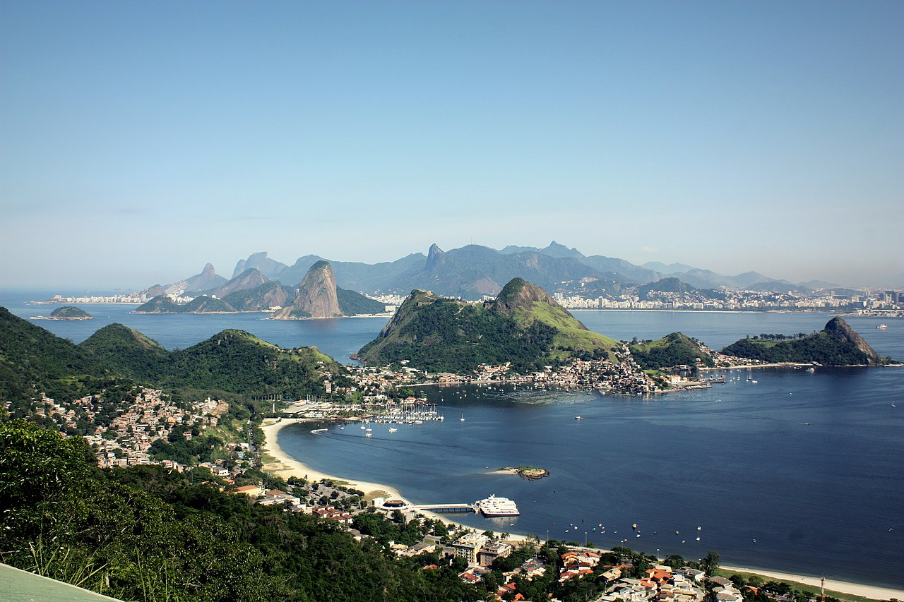
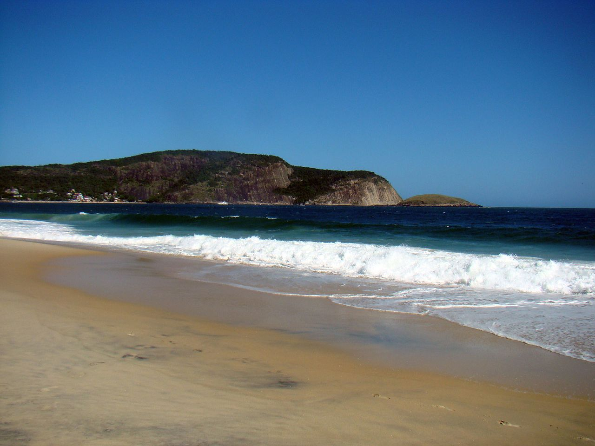
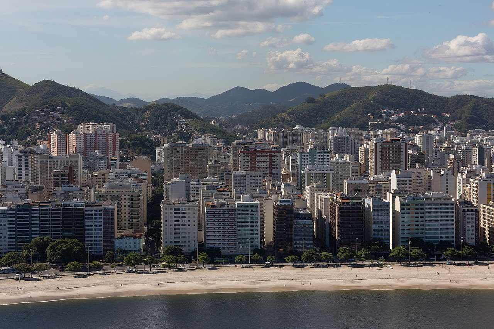
Voltar ao topo
Página principal